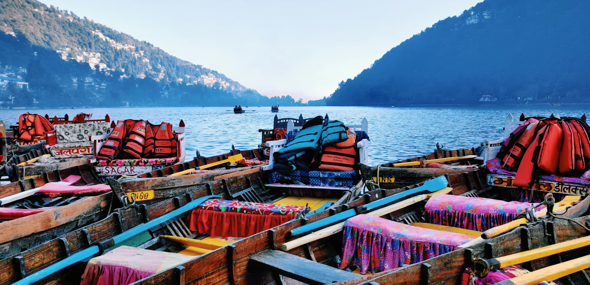
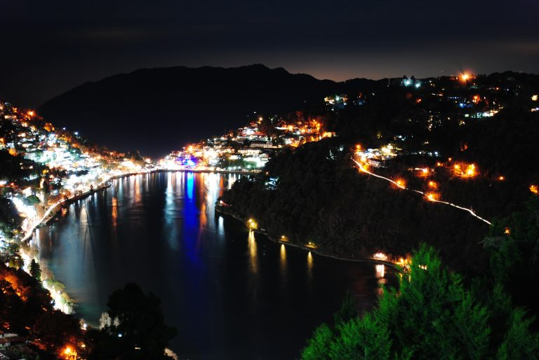
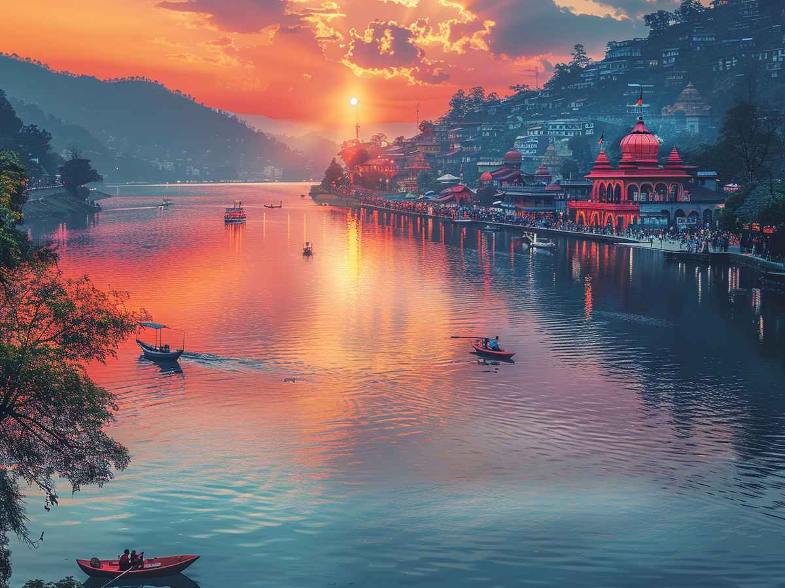

The serene Naini Lake is a popular destination in Nainital, offering scenic views and peaceful surroundings.



Naini Lake, often called the soul of Nainital, is a pristine and ancient freshwater lake nestled at an altitude of 1,938 meters in the Kumaon region of Uttarakhand. Surrounded by lush hills and dense forests, it forms a natural amphitheater that gives Nainital its unique bowl-shaped beauty.
According to legend, the lake derives its name from Goddess Naina Devi, whose eyes ("naina") are believed to have fallen here. It is considered sacred, and the famous Naina Devi Temple stands on its northern shore, attracting thousands of devotees every year for blessings and aarti. The calm waters reflect the surrounding snow-capped peaks, especially during sunrise and sunset, creating a divine and peaceful atmosphere that soothes the soul.
March to June and September to November — clear skies, pleasant weather, and crystal-clear water.
Home to the ancient Naina Devi Temple, the lake is deeply connected to Goddess Sati and is revered as a place of divine energy and inner peace.
Boating (paddle boats & shikara rides), evening walks along the Mall Road, photography at sunrise/sunset, and visiting nearby temples.
"Naini Lake is not just a body of water — it is a mirror of the Himalayas, reflecting peace, devotion, and the eternal beauty of Devbhoomi."